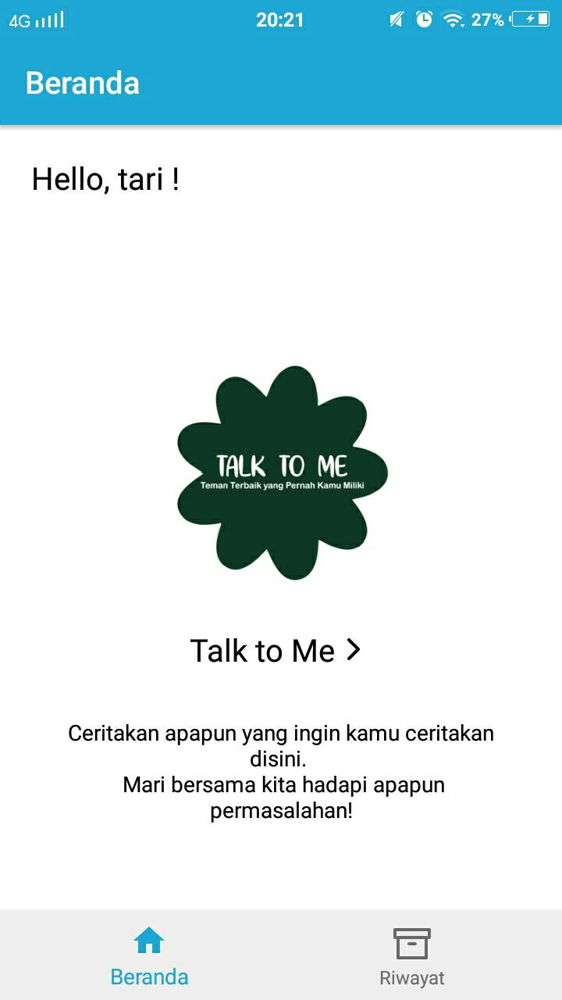
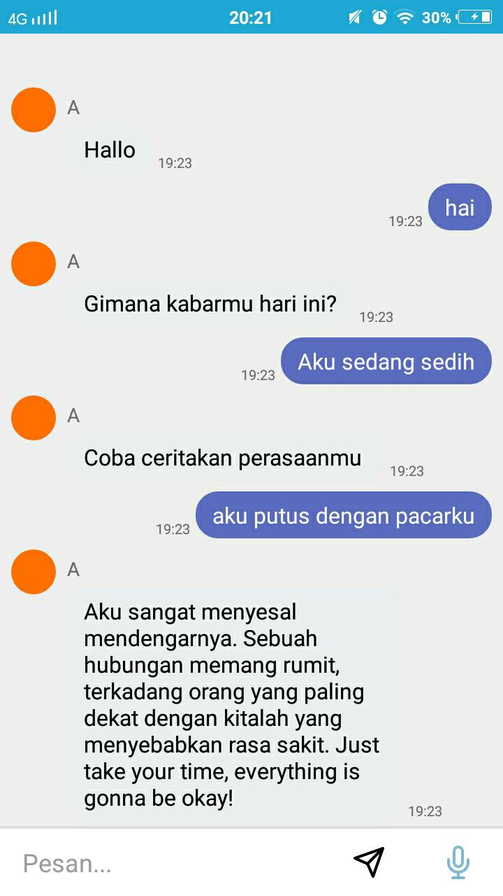

Talk To Me Android
Brief
Talk to Me is a chatbot application specifically used for people with depression. By applying Artificial Intelligence technology, Talk to Me is able to be a confidant who can provide wise answers in dealing with certain situations faced by depression sufferers.
Date January 2020 Client Tanrida Utari URL Private